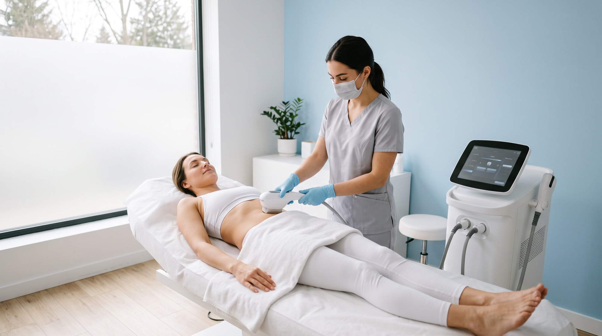

The only one in Puerto Rico
truSculpt
A new figure in about three months for men and women, with no needles, bruising, incisions or surgery. Heat reaches the fat under the skin, destroys it, and the lymphatic system removes it for good, without affecting the outer layers or leaving marks. Our staff is trained by Cutera.
6 weeksto visible results
2 to 3sessions, every six weeks